Latest repair: downward-curled tips with delayed inner/outer/tip articulation; gentle 2.417-second flight; a coherent 1.6-second mouth opening with all teeth attached to the moving rim. In Blockbench: Animate → select fly or mouth_open → Play.
Replaces the rejected flat micro study visually. Concept proportions override the earlier cube table. Textures remain 32×32; that budget cannot reproduce all of the reference’s fine texture detail. Back/underside are inferred. Static/software checks do not mean exact visual approval or verified game import.

Flight · Mouth opening (front view)


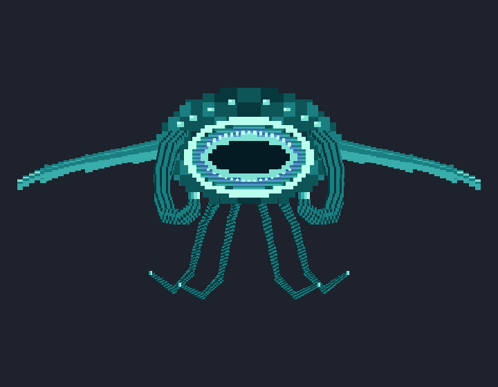
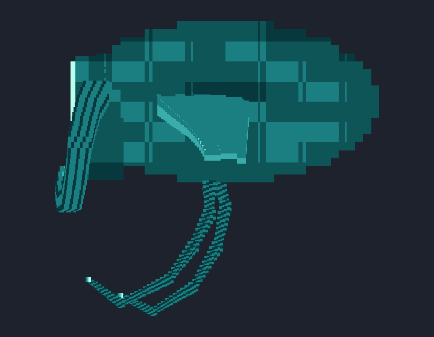
Top view · Left view · Underside
Companion-sized Blockbench model · Large editable model
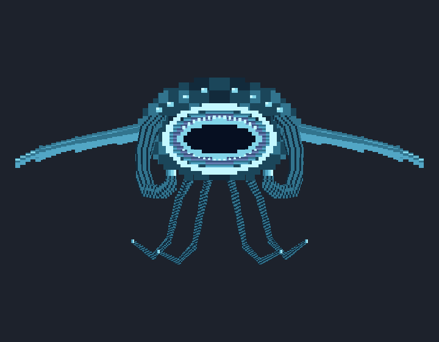
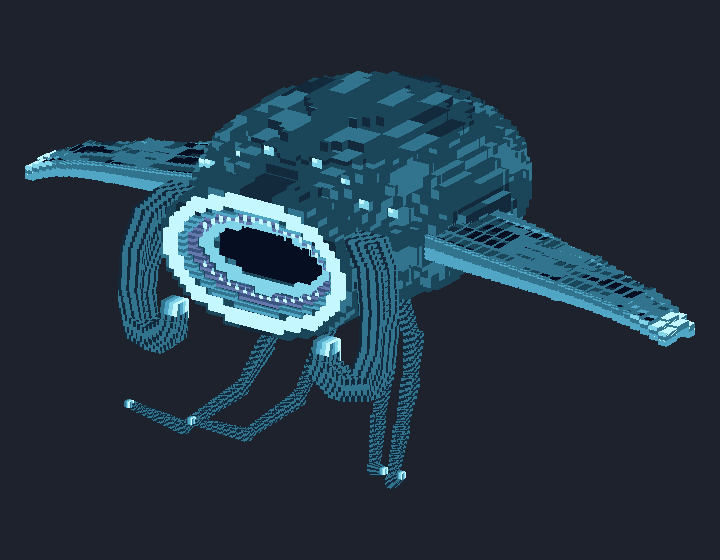
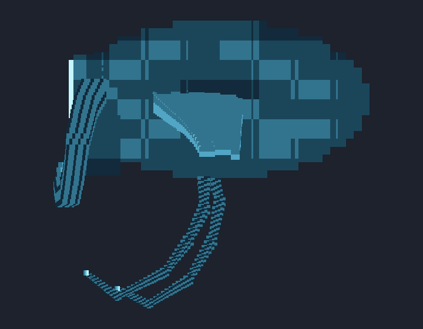
Top view · Left view · Underside
Companion-sized Blockbench model · Large editable model
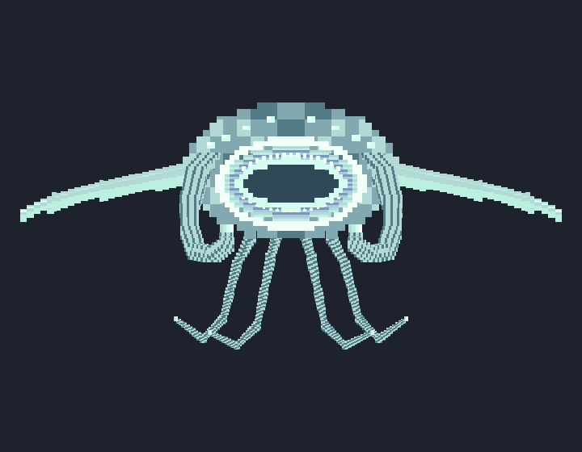
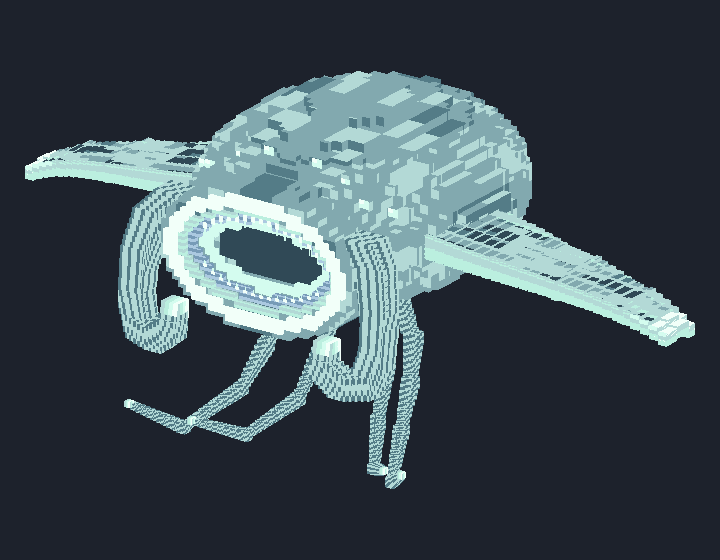
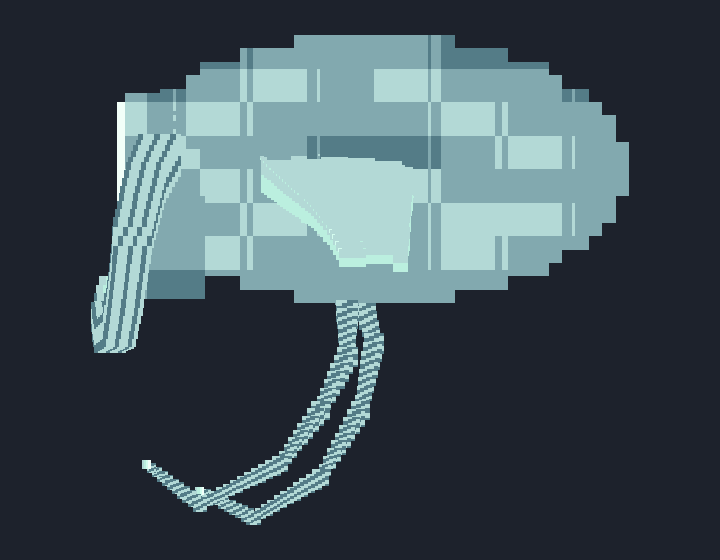
Top view · Left view · Underside
Companion-sized Blockbench model · Large editable model
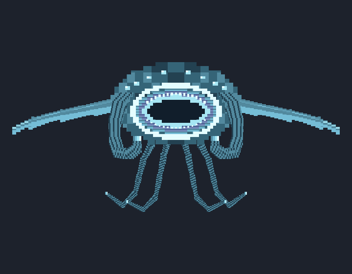
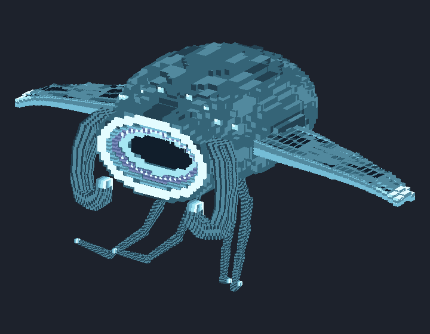
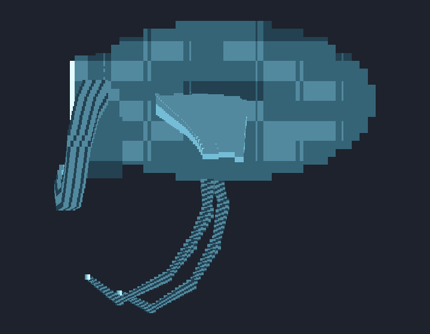